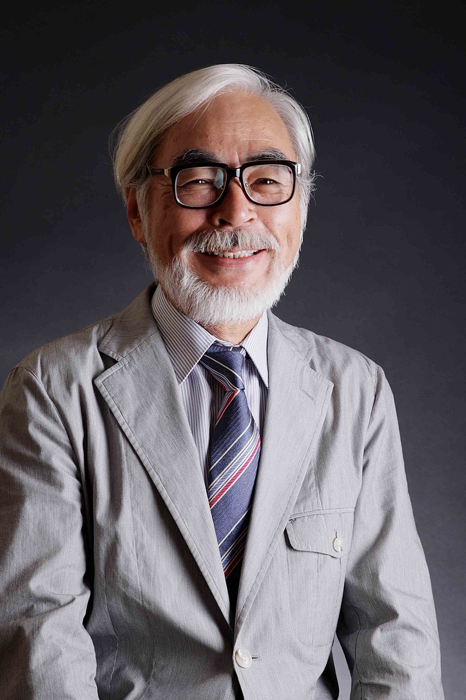
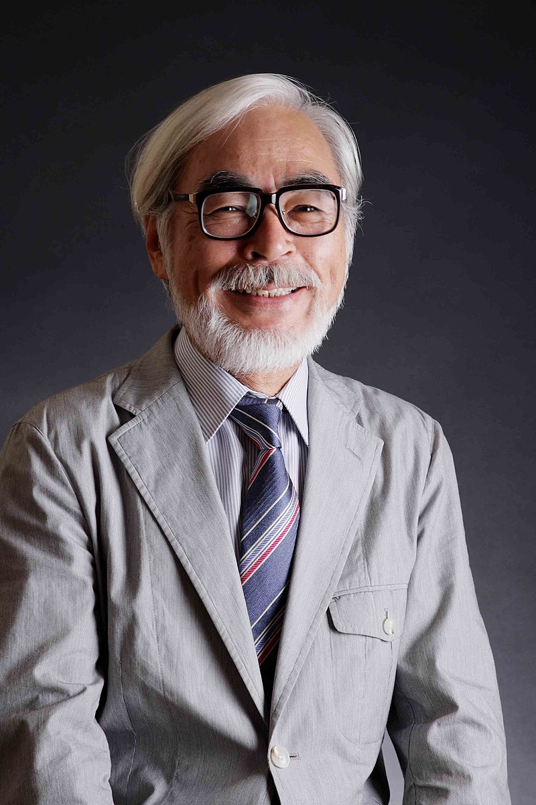

Studio Ghibli
O Studio Ghibli é um estúdio de animação japonês, sediado em Koganei, Tóquio. Fundado em 1985, o estúdio já
produziu 21 longas de animação,
sendo o primeiro O Castelo no Céu (1986) e o mais recente As Memórias de Marnie (2014).
O Studio Ghibli foi fundado em 1985 por Hayao Miyazaki, Isao Takahata, Toshio Suzuki e Yasuyoshi Tokuma, logo
após o sucesso de Nausicaä
do Vale do Vento, no ano anterior. O estúdio lançou seu primeiro filme, O Castelo no Céu, no ano seguinte. O
logotipo da empresa é o Totoro,
o personagem do filme Meu Amigo Totoro, lançado em 1988. Com exceção de seis produções, todos os filmes do
estúdio foram dirigidos por Hayao
Miyazaki e Isao Takahata. Toshio Suzuki, por sua vez, é o produtor da maioria deles. Em 2001, o Museu Ghibli, um
museu dedicado as obras do estúdio,
foi inaugurado.
 

Hayao Miyazaki
Hayao Miyazaki é um animador, cineasta, roteirista, escritor e artista de mangá japonês. É co-fundador do
Studio Ghibli, uma companhia de cinema e animação, tendo conquistado reconhecimento e aclamação internacional
pela qualidade de seus vários longas-metragens de animação, os quais ele normalmente escreve e dirige, sendo
amplamente considerado como um dos principais nomes da indústria de animação japonesa.
Os trabalhos de Miyazaki são caracterizados pela recorrência de diversos temas, como a relação da humanidade com
a natureza e tecnologia, a integridade de padrões de vida naturais e tradicionais, a importância da arte e
perícia e a dificuldade de manter uma ética pacifista em um mundo violento.
Suas protagonistas são frequentemente meninas ou jovens mulheres fortes, com muitos de seus trabalhos
apresentando antagonistas ambíguos que possuem qualidades redentoras. Suas obras já foram muito elogiadas e
premiadas, com ele inclusive tendo recebido um Oscar Honorário em novembro de 2014 por suas contribuições para a
animação.